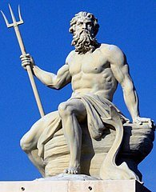

La nașterea lui Zeus, mama sa, Rhea, temându-se că tatăl său, Cronos, o să-l înghită ca și pe ceilalți copii a fugit în Creta. Acolo, într-o peșteră, ajutată de nimfe și păzită de războinicii cureți și de spirite, Rhea l-a adus pe lume pe Zeus. În timp ce nimfele îl hrăneau pe Zeus, cureții făceau zgomot, lovindu-și scuturile cu lăncile, ca țipetele copilului să nu fie auzite de Cronos. După ce bebelușul a crescut în siguranță, Zeus i-a fost încredințat Geei, ca să-l educe.
Fiică a lui Cronos și a Rheei, Hera este cea mai frumoasă zeiță olimpiană. Zeus s-a îndrăgostit de ea, dar n-a putut să o cucerească decât transformat într-un cuc.
În Iliada, zeii o tratează pe Hera cu acelaşi respect care îi este rezervat augustului său soţ. Zeus însuşi îi ascultă sfaturile şi îi împărtăşeşte gândurile sale ascunse. Comparativ cu Zeus, ea este însă inferioară ca putere şi autoritate şi trebuie să i se supună necondiţionat, asemenea celorlalţi zei din Olimp.
Dintre toţi zeii Olimpului, ea era singura căsătorită în sensul propriu al cuvântului, din moment ce iubirile Afroditei sau căsătoria acesteia cu Hefaistos sunt rareori considerate ca atare de poeţii antici. Datorită acestei poziţii unice, ea este zeiţa ocrotitoare a căsătoriei şi a naşterilor şi este reprezentată ca mama Ilitiilor.
Cu toate acestea, ea putea aduce pe lume copii singură, fără concursul lui Zeus. Astfel l-a născut pe Tifon, pentru a-şi arăta mânia împotriva lui Zeus, care o adusese pe lume pe Atena fără ea. În acelaşi fel se considera că se născuseră alţi doi fii ai Herei, Ares şi Hefaistos, ultimul născut înainte de vreme, potrivit unei versiuni a mitului, în perioada de trei sute de ani când Hera avusese doar relaţii secrete cu Zeus. O altă versiune afirmă că Hefaistos s-a născut din coapsa Herei.
Bufnița este considerată animalul sacru al Athenei, sursa înțelepciunii și judecății sale. Este grăitor, de asemenea, că animalul cel mai asociat cu ea are o viziune nocturnă atât de excepțională, simbolizând capacitatea Athenei de a „vedea” când alții nu pot.
În mitologia greacă, Poseidon este zeul mării, fiul lui Cronos și al Rheei. Ca și ceilalți frați ai săi, când s-a născut, Poseidon a fost înghițit de către tatăl său și apoi dat afară.  Poseidon a luptat alături de olimpieni împotriva titanilor. Când, în urma victoriei, s-a făcut împărțirea Universului, lui Zeus i-a revenit Cerul, lui Hades lumea subpământeană, iar lui Poseidon împărăția apelor .
El sălășluia în fundul mării împreună cu soția sa, Amfitrita, alături de care, uneori, urmat de un întreg cortegiu marin și purtat de un car tras de cai înaripați, spinteca valurile.
Poseidon stârnea furtunile sau făcea ca apele mării să devină liniștite, el scotea insule la iveală sau le scufunda pe altele lovindu-le cu tridentul său, făcea să izvorască râuri sau să se închege lacuri. Odată el a încercat împreună cu Hera și cu Atena să-l pună în lanțuri pe Zeus, dar încercarea a dat greș. De atunci Poseidon a fost mereu alături de preaputernicul său frate care cârmuia destinele lumii.
Legat de numele său este episodul întrecerii care a avut loc între el și zeița Atena atunci când a fost să-și împartă între ei pământul Atticei. Un alt episod îl înfățișează pe zeul mării lucrând cot la cot cu Apollo, ca să înalțe zidurile Troiei. Faptul că nu a fost răsplătit pentru munca sa a atras mânia lui Poseidon asupra troienilor. Această mânie, și faptul că Odiseu i-a ucis un fiu, pe ciclopul Polifem, l-a determinat pe puternicul zeu să-l urmărească pe erou cu răzbunarea sa, nimicindu-i pe rând corăbiile și aruncându-l de pe un țărm pe altul.
În mod ciudat pentru zeul mării, Poseidon este profund asociat cu caii. El a creat primul cal, a introdus călăria și cursele de care. El călărește deasupra valurilor într-un car tras de cai cu copite aurii. În plus, unii dintre numeroșii săi copii sunt de fapt cai: nemuritorul Areion și calul înaripat Pegas, care era fiul lui Poseidon și al gorgonei Medusa.
Poseidon era fiul titanului Cronos și fratele zeilor olimpici Zeus și Hades. Cronos, temându-se de un fiu care îl va răsturna în timp ce-l învingea pe tatăl său Ouranos, și-a înghițit fiecare copil în timp ce se nășteau. La fel ca fratele său Hades, a crescut în interiorul lui Cronos, până în ziua în care Zeus l-a păcălit pe titan să-și verse frații. Ieșind învingători după bătălia care a urmat, Poseidon, Zeus și Hades au tras la sorți pentru a împărți lumea câștigată. Poseidon a primit stăpânirea apelor și a tuturor creaturilor sale.